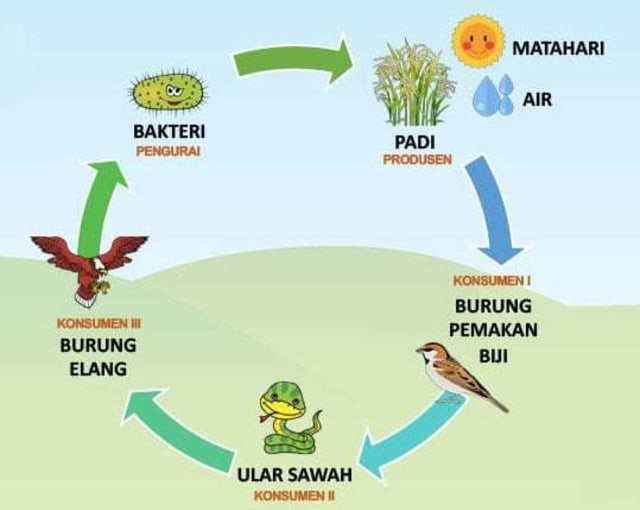

D.INTERAKSI ANTAR KOMPONEN BIOTIK DAN ABIOTIK
Interaksi antara komponen biotik dengan abiotik membentuk ekosistem. Hubunganantara organisme dengan lingkungannya menyebabkan terjadinya aliran energi dalam sistem itu.
1. Rantai Makanan
Rantai makanan adalah sebuah peristiwa makan dan dimakan antara sesama makhluk hidup dengan urutan-urutan tertentu.
Contoh:
- Tumbuhan sebagai organisme autotrof menghasilkan makanan berupa nektar bunga.
- Kupu-kupu sebagai pemakan tumbuhan mengkonsumsi madu bunga.
- Katak menangkap kupu-kupu untuk dimakan.
- Ular memburu katak untuk dimakan dan elang memakan ular.
2. Jaring-jaring Makanan

adalah gabungan dari rantai makanan yang saling berhubungan dan dikombinasikan, tumpang tindih dalam suatu ekosistem. Jaring makanan tentu berbeda dengan rantai makanan yang merupakan bagian dari jaring makanan.
Contoh:
- Seekor tupai yang bisa memakan ragam jenis makanan seperti biji-bijian dan buah-buahan.
- Zooplankton-dimakan ikan kecil-dimakan ikan besar-hewan pengurai.
- Fitoplankton-dimakan zooplankton-dimakan ikan kecil-lalu dimakan burung pemakan ikan-diuraikan oleh Fitoplankton.